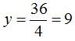
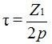
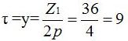
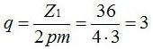
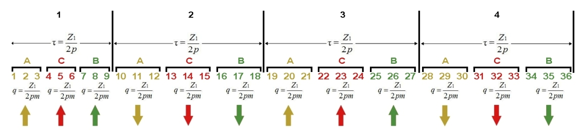
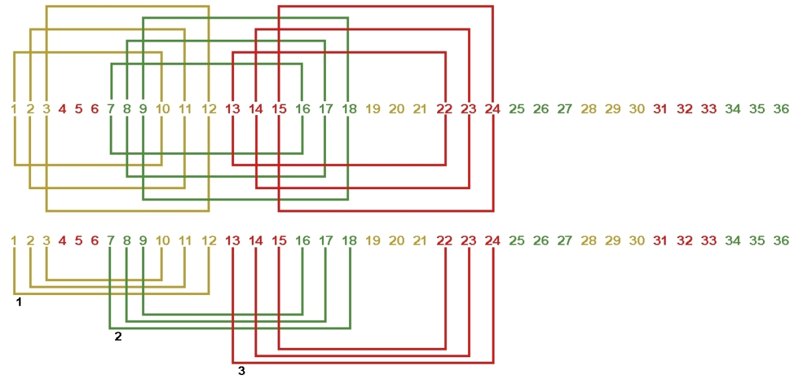

Перейти на главную страницу справочника.
Как рассчитать схему укладки обмотки в пазы трёхфазного односкоростного асинхронного электродвигателя с целым числом пазов на полюс и фазу.
Задача: требуется рассчитать схему укладки трёхфазной обмотки в статор с количеством пазов Z1=36, 1500 оборотов в минуту 2p=4.
- Шаг обмотки по пазам считаем по формуле, где у - шаг обмотки, Z1 - количество пазов статора, 2p - число полюсов.

Шаг равнокатушечной обмотки по пазам получается у=9 (1-10).
- Для расчета количества пазов на одно полюсное деление статора воспользуемся следующей формулой, где τ - количество пазов на полюсное деление, Z1 - количество пазов статора, 2p - число полюсов.

Формулы для расчета шага обмотки по пазам и количества пазов на полюсное деление статора совершенно одинаковы. Количество пазов на полюсное деление статора и шаг обмотки: τ=у=9.
- А теперь последняя формула, которая понадобится для расчета схемы укладки обмотки в пазы статора (ротора) асинхронного электродвигателя. Число пазов на полюс и фазу, где q - число пазов на полюс и фазу, Z1 - количество пазов статора, 2p - число полюсов, m - количество фаз.

Число пазов на полюс и фазу для трехфазной обмотки: q=3.
- Вот и все расчеты, которые понадобятся для составления схемы укладки обмотки в пазы статора. Перед переходом к рисунку, расскажу как я произвожу расчет трёхфазной обмотки. Количество пазов делю на количество полюсов, получаю шаг и количество пазов в полюсе, далее делю на три получаю число пазов на полюс и фазу. Число пазов на полюс и фазу равно количеству секций в катушке.
- Количество пазов на один полюс получилось: τ=9. На рисунке №1 через каждые девять пазов рисуем вертикальную линию между пазами 9 и 10, 18 и 19, 27 и 28, 36 и 1. Устанавливаем номера полюсов, на рисунке верхние цифры от 1 до 4. Чего мы добились рисуя вертикальные линии, а мы разделили сердечник статора на 4 полюса 2p=4, в каждом полюсе девять пазов статора. Обратите внимание на стрелки в нижней части рисунка, они показывают направление мгновенных значений тока в фазах. В полюсе 1 направление токов всех трех фаз вверх рисунка, в полюсе 2 вниз рисунка, в полюсе 3 вверх рисунка, в полюсе 4 вниз рисунка. Так же полюса обмотки можно представить в виде постоянных магнитов, в полюсе 1 северный, в полюсе 2 южный и т.д.
- Число пазов на полюс и фазу получилось: q=3. Одна фаза в полюсе занимает три паза. На рисунке №1 фаза А занимает пазы 1 2 3, фаза С занимает пазы 4 5 6, фаза В занимает пазы 7 8 9 в полюсе 1, точно такая же последовательность в остальных полюсах.
Рис. 1 
{kind=link}
- На основании полученного рисунка №1 составляем схему укладки обмотки в пазы статора.
- Шаг равнокатушечной обмотки по пазам получился: у=9 (1-10). Составление схемы укладки рисунок №2 начинаем с первого полюса и первой фазы А. При шаге y=9 (1-10) одна сторона секции ложится в паз 1, другая в паз 10, вторая секция в пазы 2 и 11, третья секция в пазы 3 и 12. Получилась катушка состоящая из трех секций, секции в катушке соединяются последовательно. Обратите внимание по рисунку №1, что левая часть катушки (пазы 1, 2, 3) лежит в полюсе 1 направление тока вверх рисунка, а правая (пазы 10, 11, 12) в полюсе 2 направление тока вниз рисунка. Второй рисуем фазу В, затем фазу С и так далее вправо по рисунку пока не заполнятся все пазы. В нижней части рисунка №2 концентрическая обмотка для данной схемы укладки.
Рис. 2 
{kind=link}
- Составление схемы укладки завершено, равнокатушечную (равносекционную) обмотку с шагом у=9 (1-10) преобразуем в концентрическую с шагом у=11;9;7 рисунок №3. После завершения составления схемы укладки переходите к выбору начал фаз в обмотке.
Рис. 3
07.12.2011 г.
Литература по данной теме:
Клоков Б.К. "Обмотчик электрических машин" 1987 г.